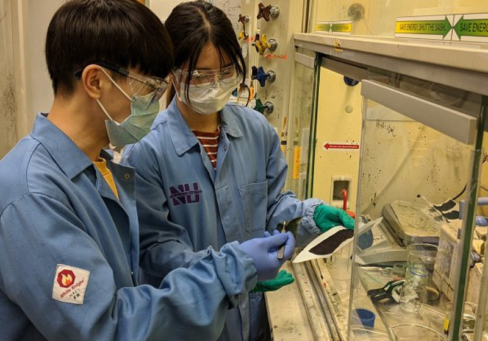
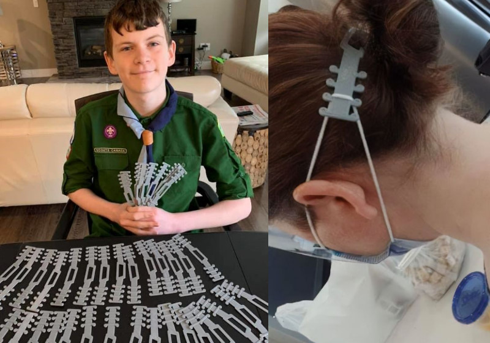

Só Notícia Boa sobre COVID-19
Inicio
Sobre
Contato
Saiba +

Cientistas criam máscara facial que mata o coronavírus na hora
Butantan desenvolve composto com anticorpos pra combater covid

Garoto cria protetor de orelha para máscaras e doa a médicos e enfermeiros
Ministro anuncia: Brasil vai testar remédio com 94% de eficácia contra covid
Vacina contra covid testada na Itália tem resultado animador
Fiocruz usa remédio do HIV contra covid-19 com sucesso